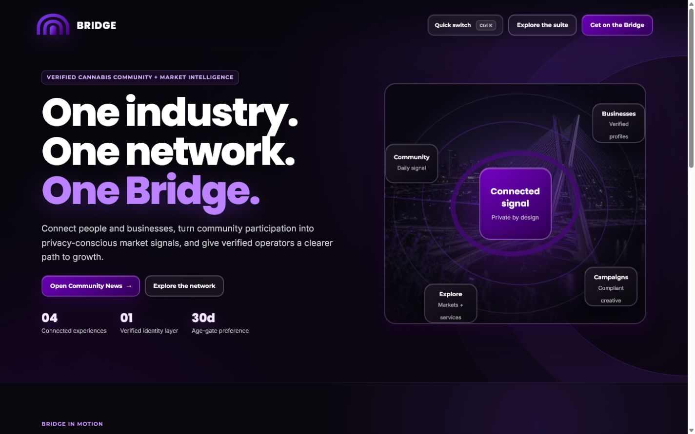
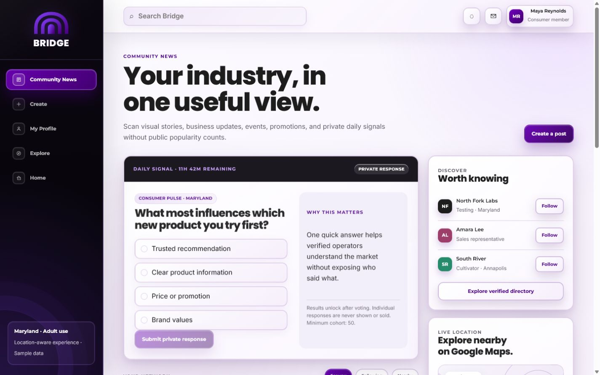
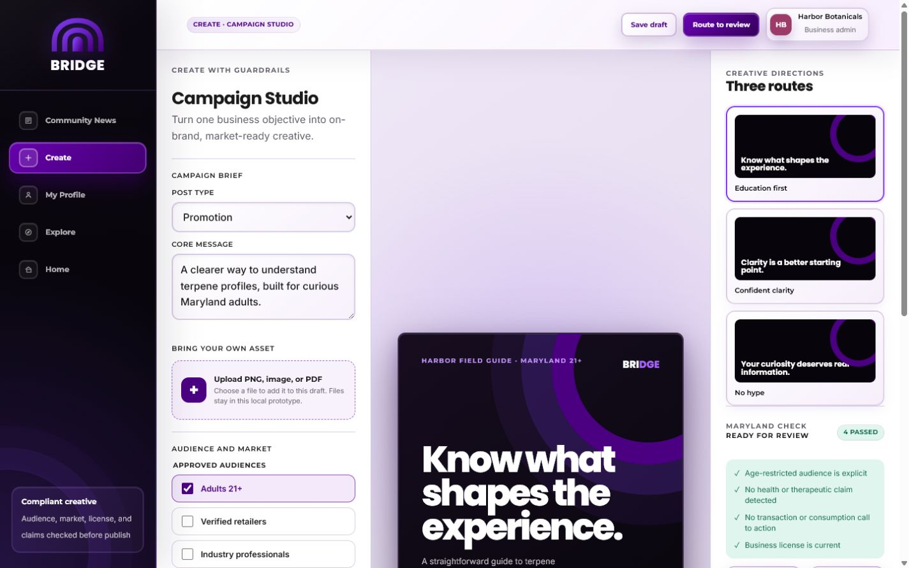
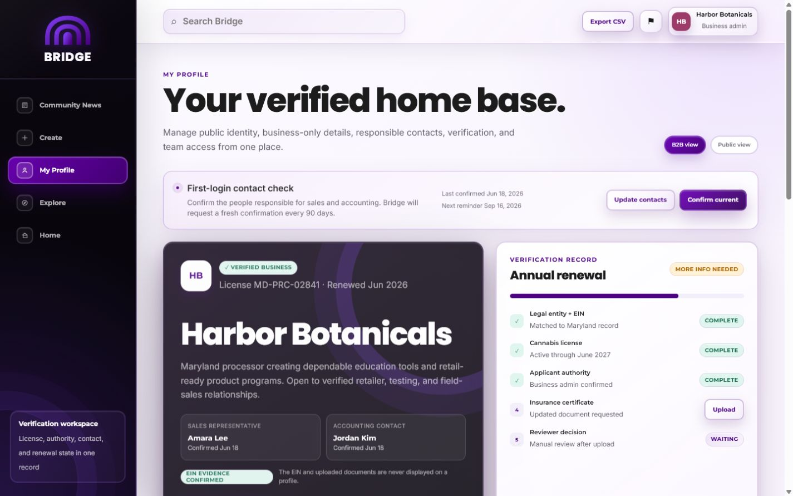
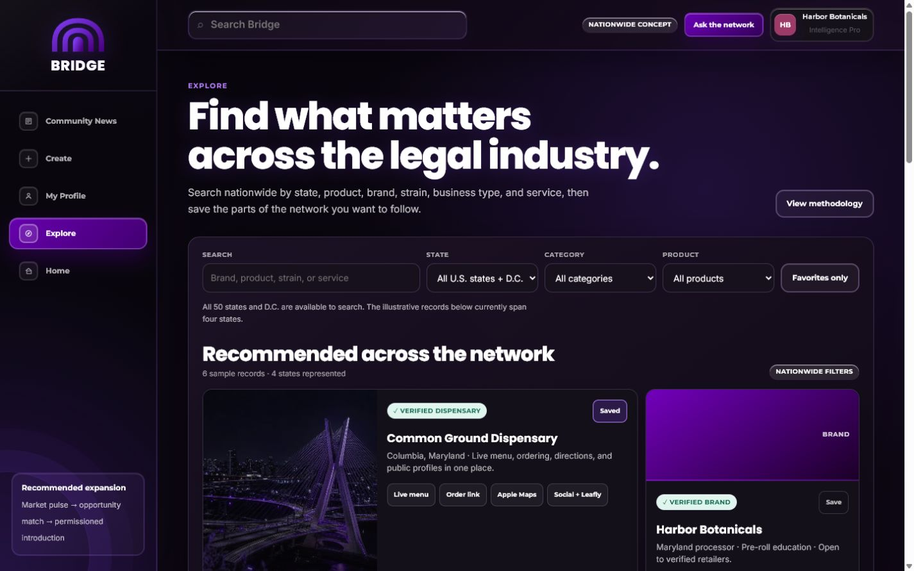

A source-grounded record of what changed, how the complete 39-minute feedback review now appears in the product, what Phase 2 deliverables are ready, and what Dillon still needs to drive.

This is no longer a loose visual prototype. The five primary spaces, their responsive behavior, key role boundaries, feedback-driven interactions, and Phase 2 implementation contracts now exist together as one reviewable package.




Signal context, verified identity, legal-market discovery, audience protection, and responsible contacts are part of the experience rather than generic dashboard decoration.
Desktop uses the product rail and wider editorial compositions. Mobile uses a persistent four-space dock and single-column decision flow.
Selected modes expose pressed state, uploads and counts announce changes, controls have labels, and reduced-motion behavior is preserved.
| Feedback theme | Disposition | Implemented result or controlled decision |
|---|---|---|
| Keep purple and dark Bridge character | Implemented | Official dark-purple direction preserved and formalized in DESIGN.md. |
| More imagery, motion, and hover | Implemented | Visual story strip, richer feed imagery, purposeful card motion, focus, and reduced-motion support. |
| Less giant hero type | Implemented | Bounded desktop typography and earlier product utility. |
| Do not reject marketing metrics | Implemented | Privacy-conscious, useful insight language replaces metrics-negative copy. |
| Clear routes and naming | Implemented | Community News, Create, My Profile, Explore, and Home are consistent everywhere. |
| News grid versus vertical feed | Approve default | Both responsive patterns are implemented with one-click comparison. |
| PNG/PDF/image upload and Promotion | Implemented | PNG, JPEG, WebP, and PDF picker with size/type validation and preview feedback. |
| Multiple audiences and protected detail | Prototyped | Multi-select audiences; protected content disables public targeting. |
| Sales/accounting contacts and recurring check | Prototyped | Responsible contacts, first-login prompt, dates, confirmation state, and 90-day cadence. |
| Public/member/EIN-verified separation | Policy lock | Public/B2B views and a field-level working matrix are ready for approval. |
| Vendor-to-vendor visibility | Decision | Deny-by-default recommendation documented; Tori, Miraj, and legal must finalize. |
| Wider services directory | Implemented | Bank, transport, lab, construction/HVAC/electrical, dispensary, and brand examples. |
| Nationwide filters and favorites | Implemented | All 50 states and D.C., category, product, brand/strain/service search, result counts, favorites, and coverage-aware empty states. |
| Menu, order, Apple Maps, social, Leafly | Prototyped | Consumer utility appears on a dispensary result; providers remain a production choice. |
| $349-$350 pricing | Validate | Kept out of the UI and recorded as a hypothesis, not a final term. |
| Two-sided launch and major brands | Business work | Moved to launch readiness and network-density planning. |
| Do not rush | Governed | Explicit stakeholder, data, technical, legal, test, and pilot exit gates. |
| HR idea | Future only | Excluded from Phase 2 MVP pending its own legal and privacy charter. |
The five spaces, labels, purpose, and handoff paths are reflected in the working prototype and product contract.
Public adult, industry member, EIN-verified business, authorized staff, and admin capabilities are defined as the working baseline.
First-time discovery, feed comparison, targeted creation, profile confirmation, and nationwide discovery have testable outcomes.
Homepage hierarchy, navigation, search, feed comparison, upload, audience rules, filters, favorites, and profile visibility exist in the same suite.
P0 lock, recommended vertical slice, network expansion, launch readiness, future HR, owners, dependencies, and exit gates are separated.
Targeted Promotion creation plus protected profile projection. This slice proves identity claims, uploads, audience rules, public/B2B field projection, contact confirmation, and auditability without requiring the entire nationwide marketplace first.
| Capability or data | Public adult 21+ | Industry member | Verified business | Authorized staff | Admin |
|---|---|---|---|---|---|
| Read public Community News | Yes | Yes | Yes | Yes | Yes |
| Participate in eligible signal | No | Yes | Yes | Yes | Yes |
| Create public promotion | No | Eligible creator | Yes | By permission | Yes |
| View public profile fields | Yes | Yes | Yes | Yes | Yes |
| View wholesale/relationship fields | No | Decision | Scoped | By permission | Audited |
| View sales/accounting contacts | No | No by default | Scoped | By permission | Audited |
| Confirm responsible contacts | No | No | Owner/admin | By permission | Audited |
| Request protected introduction | No | Eligible | Yes | By permission | Yes |
| View EIN/source documents | No | No | Status only | Status only | Verification staff only |
The prototype is strong enough to force the right conversations. I need to turn those conversations into recorded approvals, owners, and one production slice.
Lead Tori's route-by-route acceptance review. Capture accept, revise, or defer on every primary space.
Lock the feed default. Have Tori choose News grid or Classic feed while preserving the alternate as evidence.
Convene the visibility session. Bring Tori, Miraj, and legal together for fields, roles, vendor access, exceptions, and audit ownership.
Select the vertical slice with Miraj. Confirm scope, owner, API contract, fixtures, acceptance tests, and target date.
Approve production imagery and copy. Replace or approve any illustrative fixture before stakeholder or public use.
Assign operations ownership. Verification, moderation, reminders, introductions, support, and escalation each need a named owner.
Split launch workstreams. Pricing, major-brand recruitment, network density, and legal-state data are not interface subtasks.
Protect the MVP boundary. Keep HR out until its own legal, privacy, retention, access, and non-surveillance charter exists.
One dated accept/revise/defer record after the Tori walkthrough.
One vertical-slice brief signed by Dillon and Miraj.
A named operational owner for every trust-critical workflow.
Tori's review defines the experience. A responsible production path also needs the following foundations, even where the transcript did not specify implementation detail.
Tori acceptance, feed default, visibility matrix, vertical slice, and ownership.
Authentication, uploads, audience rules, profile projection, contact event, and tests.
Nationwide data, filters, favorites, provider utilities, introductions, and moderated feed.
Network density, operations, analytics, compliance, support, pilot, and rollback.
Source basis: the July 23, 2026 Tori review transcript summary, approved Bridge source package, current authoritative prototype repository, the canonical Phase 2-and-beyond plan, and live Netlify route/interaction readback on August 4, 2026. Illustrative prototype records remain clearly separated from verified external facts.